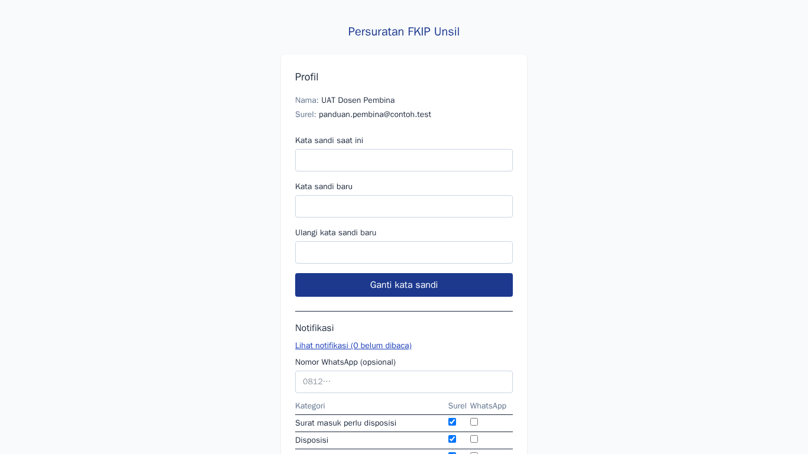
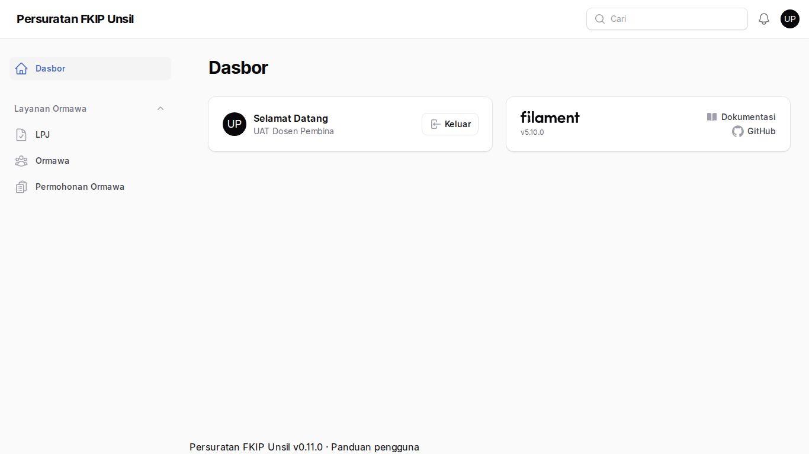
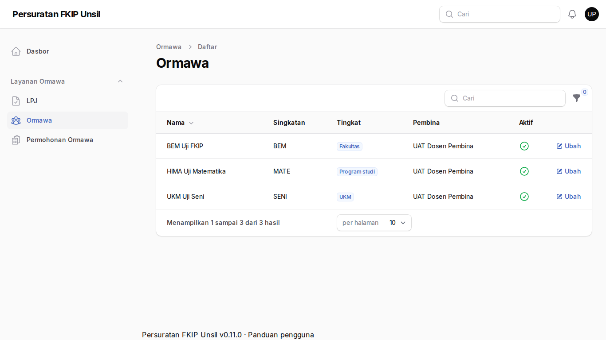
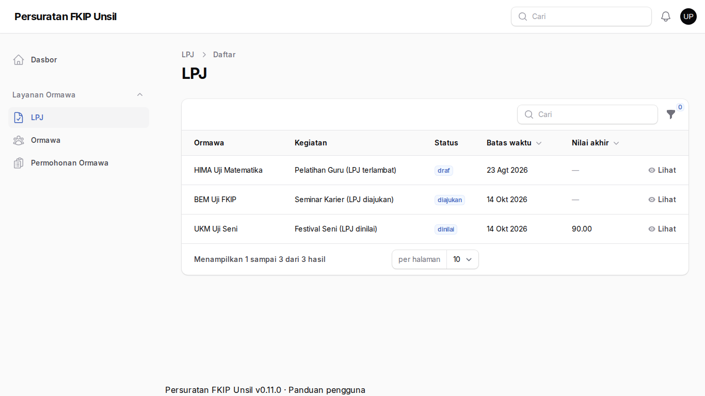

Dosen pembina ormawa
Tujuan
Memantau ormawa binaan, menyetujui permohonan (bila tahap persetujuan pembina diaktifkan fakultas), dan melihat LPJ.
Cara masuk
Admin membuatkan akun dengan peran pembina dan menautkannya ke ormawa binaan. Masuk lewat Masuk; panel admin dapat dibuka dari /admin sesuai izin.
Langkah-langkah
- Profil akun
Atur kata sandi dan preferensi notifikasi. Anda menerima notifikasi saat permohonan binaan menunggu persetujuan Anda.
Langkah 1 — Profil akun - Dasbor panel
Panel hanya menampilkan menu yang diizinkan untuk peran pembina.
Langkah 2 — Dasbor panel - Ormawa binaan
Daftar ormawa yang Anda bina beserta profilnya. Anda dapat memperbarui profil ormawa binaan.
Langkah 3 — Ormawa binaan - LPJ ormawa binaan
Pantau LPJ ormawa binaan (hanya binaan Anda yang tampil). Penilaian dilakukan pimpinan.
Langkah 4 — LPJ ormawa binaan
Tanya jawab
Mengapa ormawa lain tidak tampil?
Pembina hanya melihat ormawa dan LPJ binaannya.
Di mana menyetujui permohonan?
Tahap persetujuan pembina hanya muncul bila diaktifkan di Pengaturan sistem; notifikasi akan menautkan permohonan terkait.